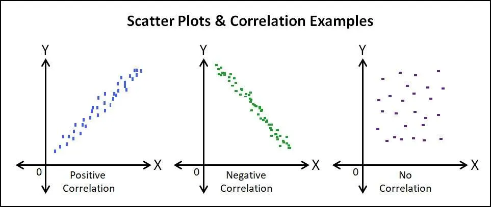
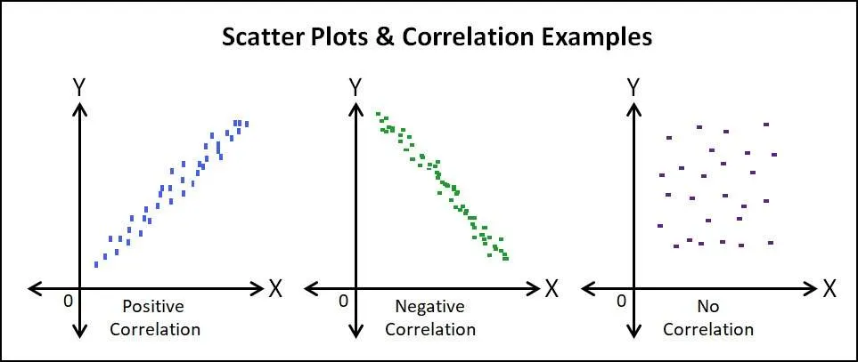

Is the energy generated by themovement of electrons from one point to
another; is an energy related to forces on electrically-charged particles
and the movement of those particles. This energy is supplied bythe
combination of current and electric potencial that is delivered by a
circuit.
What are the characteristics of electrically charged objects?
-Like charges repel one another; that is, positive repels positive and negative repels negative.
-Unlike charges attract each another; that is, positive attracts negative.
-Charge is conserved. A neutral object has no net charge.
1. The Volt
The pressure that is put on free electrons that causes them to flow is known as electromotive force (EMF). The volt is the unit of pressure, i.e., the volt is the amount of electromotive force required to push a current of one ampere through a conductor with a resistance of one ohm.
2. The Ampere
The ampere defines the flow rate of electric current. For instance, when one coulomb (or 6 x 1018 electrons) flows past a given point on a conductor in one second, it is defined as a current of one ampere.3. The Ohm
The ohm is the unit of resistance in a conductor. Three things determine the amount of resistance in a conductor: its size, its material, e.g., copper or aluminum, and its temperature. A conductor’s resistance increases as its length increases or diameter decreases. The more conductive the materials used, the lower the conductor resistance becomes. Conversely, a rise in temperature will generally increase resistance in a conductor.
Is the international system of units (SI) standard unit of power (Energy per unit time), is the equivalent of one jouyeper second. Also, is used to specify the rate at which electrical energy isdissipated or the rate at which electromagnetic energy is radiated, absorbed or dissipated.

Uses dots to represent values for two different numeric variables. The position of each dot on the horizontal and vertical axis indicates values for an individual data point. Scatter Plots are graphics, that are used to observe relationships between variables.
Parts of the scatter plot
The Title
The title offers a short explanation of what is in your graph. This helps the reader identify what they are about to look at. It can be creative or simple as long as it tells what is in the graph. The title of this graph tells the reader that the graph contains information about the difference in money spent on students of elementary and secondary schools from different countries.
The Legend
The legend tells what each point represents. Just like on a map, the legend helps the reader understand what they are looking at. Each of the colors in this legend represents a different country.
The Source
The source explains where you found the information that is in your graph. It is important to give credit to those who collected your data! In this graph, the source tells us that we found our information from the Organization for Economic Cooperation and Development.
Y-Axis
In x-y plots, the y-axis runs vertically (up and down). Typically, the y-axis has numbers for the amount of stuff being measured. The y-axis usually starts counting at 0 and can be divided into as many equal parts as you want to. In this line graph, the y-axis is measuring the Gross Domestic Product (GDP) of each country.
The Data
The most important part of your graph is the information, or data, it contains. Line graphs can present more than one group of data at a time. In this graph, two sets of data are presented.
X-Axis
In x-y plots, like the one above, the x-axis runs horizontally (flat). Typically, the x-axis has numbers representing different time periods or names of things being measured. In this plot, the x-axis measures the amount of money spent by a country on elementary and secondary education per child.}
Characteristics
1. A scatter plot provides the most useful way to display bivariate (2-variable) data.
2. A scatter plot can indicate the presence or absence of an association or relationship between two variables.
3. When some association or relationship exists between two variables, a scatter plot can indicate the direction of the relationship.
4. A scatter plot can be used to help determine if an association or relationship is linear or nonlinear.
5. A scatter plot provides a visual revelation of outliers or dubiously measured or erroneously plotted data.

.png) 

Is a basic and commonly used type of predective analysis. The overall idea of regression is to examine two things:
- Does a set of predictor variables do a good job in predicting an outcome (dependent) variable?
- Which variable in particular are significant predictor of the outcome variable?
The variable is define by the formula:
y=c+b*x
y= Estimated dependent variable score.
c= Constant.
b= Regression coefficient.
x= Score on the independent variable.
Properties of Linear Regression
For the regression line where the regression parameters b0 and b1 are defined, the properties are given as:
-The line reduces the sum of squared differences between observed values and predicted values.
-The regression line passes through the mean of X and Y variable values
-The regression constant (b0) is equal to y-intercept the linear regression
-The regression coefficient (b1) is the slope of the regression line which is equal to the average change in the dependent variable (Y) for a unit change in the independent variable (X).
Regression Coefficient
In the linear regression line, we have seen the equation is given by;
Y = B0+B1X
Where
B0 is a constant
B1 is the regression coefficient
Now, let us see the formula to find the value of the regression coefficient.
B1 = b1 = Σ [ (xi – x)(yi – y) ] / Σ [ (xi – x)2]
Where xi and yi are the observed data sets.
And x and y are the mean values.
The regression has five key assumptions:
-Linear relationship: is one in which two variables have a direct connection, which means if the value of x is changed, y must also change in the same proportion.
-Multivariate normality: is a vector in multiple normally distributed variables, such that any linear combination of the variables is also normally distributed.
-No or little multicollinearity. 1. No Multicollinearity—Multiple regression assumes that the independent variables are not highly correlated with each other. This assumption is tested using Variance Inflation Factor (VIF) values. 2. little multicollinearity- When there is a relationship among the exploratory variables, but it is very low, then it is a type of low multicollinearity.
-No auto-correlation.: This means that the error term of one observation is not influenced by the error term of another observation. In case it is not so, it is termed as autocorrelation. It is generally observed in time series data.
-Homoscedasticity.: refers to a condition in which the variance of the residual, or error term, in a regression model is constant. That is, the error term does not vary much as the value of the predictor variable changes.

Is energy derived from natural sources that are replanished at a higher rate than they are consumed (Sunlight-Wind). For example, are such sources that are constantly being replenished.
Some of them are:
- Solar energy: Is the most abundant of all energy resources.
- Wind Energy.
- Geothermal energy.
- Hydropower.
- Ocean energy.
- Bioenergy.
Characteristics
Unlimited power source. Unlike fossil fuels -such as coal, natural gas or oil-, whose reserves are already running out, this type of energy does not run out as it is consumed.
They come from natural resources. They are nourished by natural elements so, while resources such as the sun or water appear to supply the Earth, renewables can continue to provide us with energy.
They do not produce greenhouse gas emissions. Another of its great differences with fossil fuels. So they do not harm the planet or contribute to climate change.
Does not generate waste. So its impact on the environment is very small.
Main benefits of renewable energies
1. Environmental benefits
2.They create jobs and improve the economy
3.Energy security
4.Resilience
5.Competitive
6.Accessible
Three Important Features of Renewable Energy
1.) Form of Energy Supply (Store vs Flow)
Fossil fuels are concentrated stores of chemical energy (stored in carbon bonds). One can store and transport coal, oil, and natural gas over long distances without losing the quality of this energy. Moreover, they contain significant amounts of energy per unit mass or volume (something that our transportation system has benefited from).
2.) Form of Energy as Delivered
Many of our renewable options (including tidal and geothermal not listed in table) supply energy to end uses in the form of electricity. Considering that electricity now supplies less than 40% of our energy end uses (the rest being largely fossil fuels), a renewable future would require not only significant changes in energy generation and storage but energy supply systems.
3.) Power Density
Power density refers to the rate of energy flow per unit land area. Why should you care about what seems like a dry engineering concept? You should care because this is a characteristic of energy supply that shapes our infrastructure and settlement patterns, In many ways we can say that our cities are in part the outcome of the HIGH power densities provided by fossil fuels.